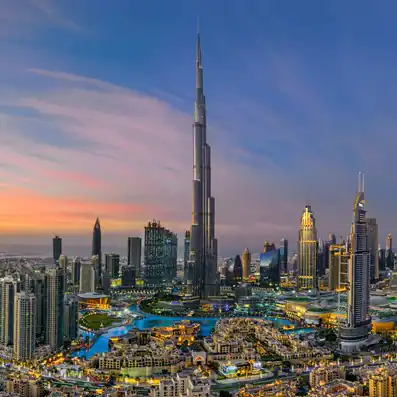
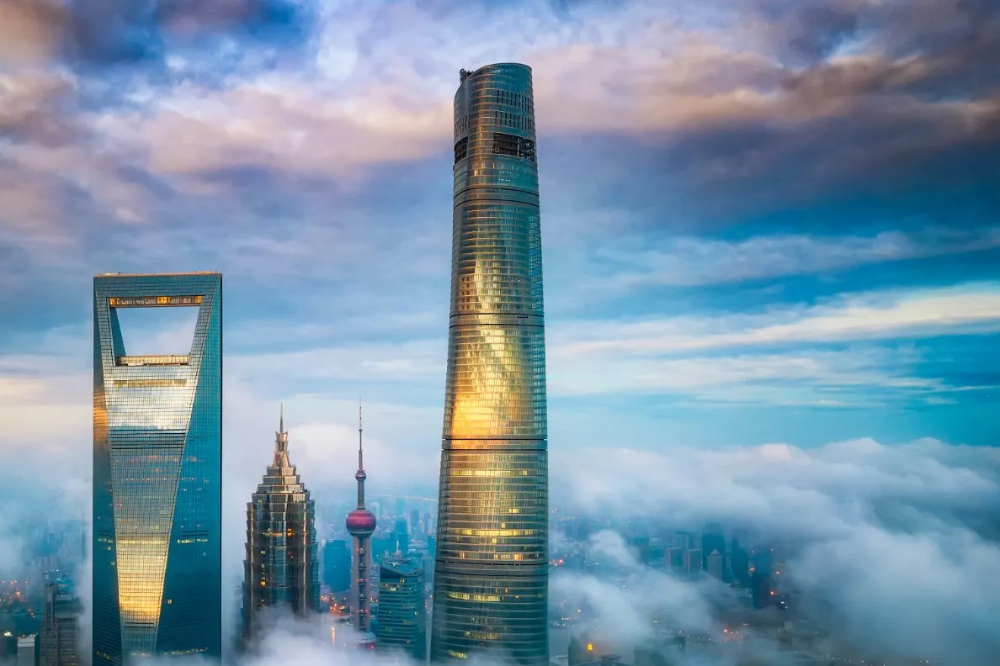
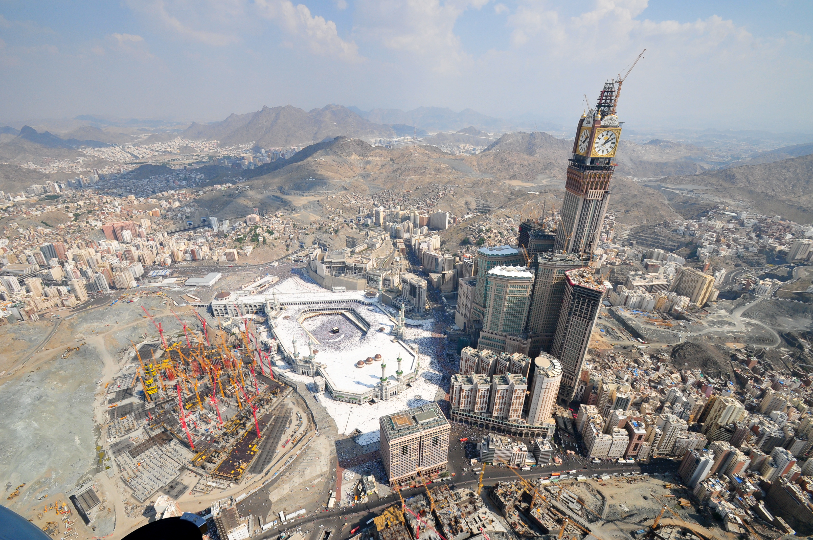
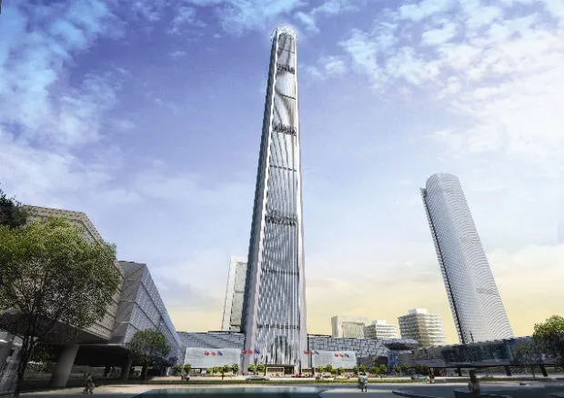

I suoi 828 metri e 163 piani gli assicurano la vetta della nostra lista dei 5 edifici più alti del mondo. L'edificio è frutto dell'ambizione dello sceicco Maktum bin Rashid Al Maktum, emiro di Dubai. Il Burj Khalifa di Dubai vanta ben due belvederi dalla vista panoramica mozzafiato, di cui uno situato al 124º piano e uno al 148º piano. La costruzione di quest’imponente torre ha avuto inizio nel 2004 e si è conclusa nel 2010, un anno più tardi rispetto ai tempi previsti. I primati dell'edificio si sono registrati anche durante il cantiere per la sua costruzione, poiché per arrivare a gettare il calcestruzzo fino agli ultimi piani della struttura nel novembre 2007 è stato raggiunto il primato del più alto getto da terra a un’altezza di 601 metri
Sapevate che è visibile da oltre 95 chilometri di distanza? E che è il doppio dell’Empire State di New York? Vi lascerà di stucco!
La Shanghai Tower è un grattacielo a Lujiazui, Pudong, Shanghai in Cina che caratterizza lo skyline di Shanghai e unisce progettazione sostenibile, efficienza energetica e architettura futuristica. L’edificio, alto 632 metri si colloca al secondo posto nella nostra lista, ha 128 piani con una superficie di 380,000 m2, è il grattacielo più alto della Cina . Accoglie circa 16.000 persone al giorno. Condivide il record (insieme al Ping An Finance Centre) di avere il ponte di osservazione più alto del mondo all’interno di un edificio o struttura a 562 metri d’altezza, e gli ascensori più veloci del mondo con una velocità massima di 20,5 metri al secondo (74 km/h). Il grattacielo svetta sul quartiere finanziario di Pudong e forma un triangolo insieme allo Shanghai World Financial Center e alla Jin Mao Tower. L’edificio è aperto al pubblico dal 2016. Il palazzo è una vera e propria vetrina delle più innovative tecnologie in campo architettonico e ingegneristico del XXI secolo. Sul grattacielo sono installati turbine eoliche e pannelli solari che aiutano a produrre energia verde. Un elemento importante, considerando l’altezza del grattacielo e che si tratta di una zona soggetta a violenti tifoni, è quello della gestione del vento.
Inoltre all'interno di questo grattacielo è stato aperto il J Hotel Shanghai Tower: 165 camere e 34 suite a 632 metri da terra ,sicuramente poco raccomandato se soffrite di vertigini.
La torre Abraj Al Bait si aggiudica il terzo posto nella nostra classifica dei 5 edifici più alti del mondo grazie ai suoi 601 metri di altezza. L’edificio fa parte di un complesso di sette hotel-grattacielo della Mecca, che ha come obiettivo dare un’aria più moderna alla città e fornire una nuova prospettiva sul luogo più sacro dell’Islam, la Sacra Moschea della Mecca.
Inoltre, nei quattro piani più alti della torre potrete visitare il Museo della Torre dell’Orologio!
Con i suoi 599 metri di altezza, quest’importante grattacielo di Shenzhen, una città della provincia cinese di Guangdong, rappresenta il quarto dei 5 edifici più alti del mondo. Il Ping An Finance Center vanta quattro colonne agli angoli, che si assottigliano man mano che si sale, culminando nel belvedere panoramico della sommità dell’edificio.
Per raggiungere la parte più alta dell’edificio, non dovrete fare altro che salire su uno degli 80 ascensori disponibili. Sapevate che viaggiano ad una velocità di 36 chilometri all’ora?

Il Goldin Finance 117 di Tianjin, in Cina, raggiunge i 597 metri d’altezza e risalta particolarmente in quanto unico grattacielo della zona. A causa della pandemia, l’inaugurazione della torre è stata posticipata al 2022. Sebbene non sia ancora stato concluso, entra di diritto nella nostra lista di 5 edifici più alti del mondo, in quanto terzo grattacielo più grande della Cina.
L'edificio, soprannominato la bacchetta magica, ha una forma a tronco di piramide, caratterizzato da una base quadrata di 65 metri di lato, che si riduce a 45 metri di lato in corrispondenza del tetto.
